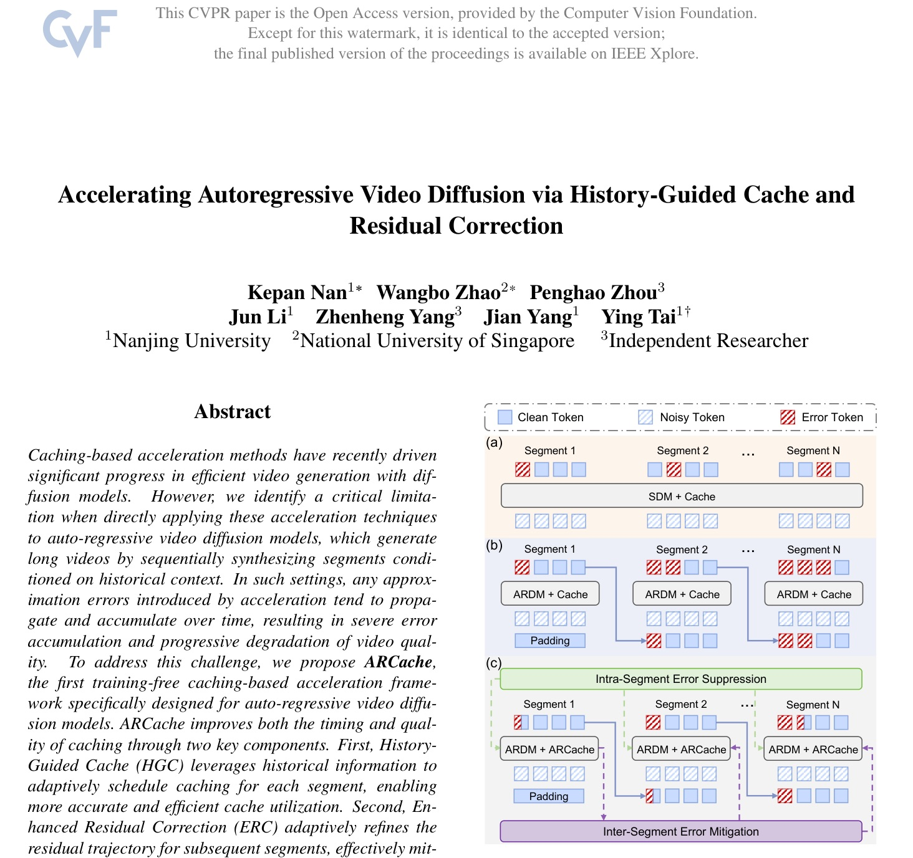
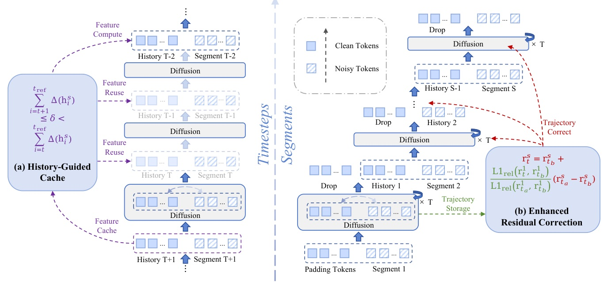
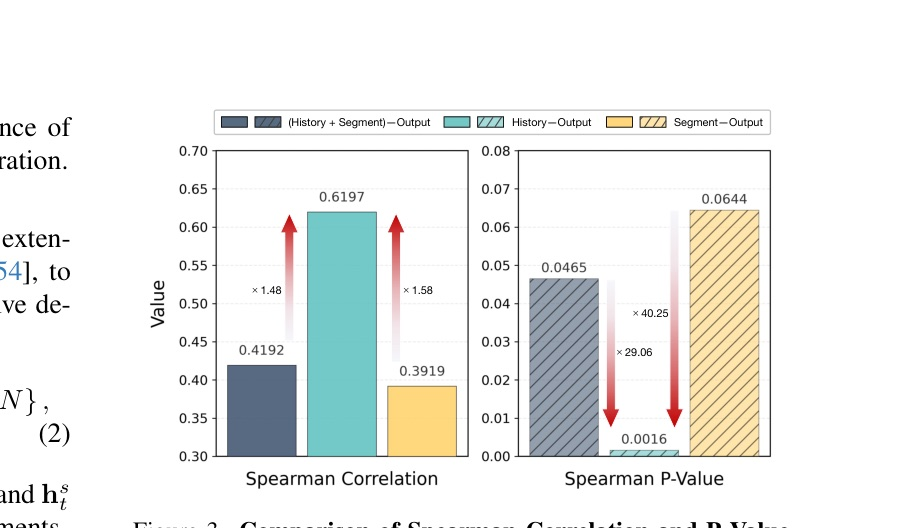
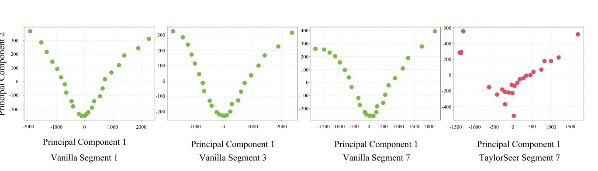
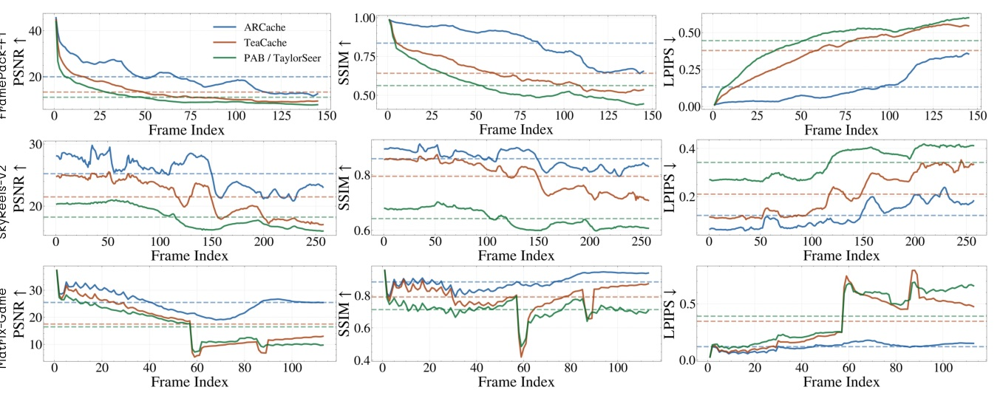

ARCache: 用 history-aware cache refresh 與 clean residual reference，讓長影片 ARDM 加速時不把 early approximation error 一路放大。
Caching video ARDMs is not a denoising-step problem; it is a history contamination problem.
ARCache 將問題拆成兩個控制點：HGC 決定何時安全 reuse；ERC 決定如何不用污染軌跡修正 residual。


Cache refresh should follow history-token change, because history best predicts ARDM output transitions.
Figure 3 reports that History-Output correlation dominates Segment-Output / full-input alternatives on FramePack-F1.

Do not correct a drifting segment by following its own drift.
ERC anchors later residual correction to the first segment, whose trajectory is not contaminated by historical cache errors.

| Model | Task | Eval set | Generation setting | Metric family |
|---|---|---|---|---|
| FramePack-F1 | Image-to-video | 1,118 VBench-I2V pairs x 5 | 145 frames / 25 steps | Latency, PSNR/SSIM/LPIPS, VBench-I2V |
| SkyReels-V2 | Text-to-video | 946 VBench prompts x 5 | 257 frames / 30 steps, 960 x 544 | Latency, PSNR/SSIM/LPIPS, VBench |
| Matrix-Game | World model | 2,432 GameWorld image-action pairs | 113 frames / 50 steps, 1280 x 720 | Latency, PSNR/SSIM/LPIPS, GameWorld Score |
All experiments use NVIDIA H100 80GB GPUs; baselines include 50% steps, PAB, TeaCache, TaylorSeer.
| Model | ARCache-fast latency | Speedup | PSNR | SSIM | LPIPS | Task score |
|---|---|---|---|---|---|---|
| FramePack-F1 | 50.81s | 2.88x | 24.34 | 0.7659 | 0.1254 | 88.81% |
| SkyReels-V2 | 191.66s | 1.87x | 25.70 | 0.8389 | 0.1223 | 77.04% |
| Matrix-Game | 158.51s | 3.13x | 19.37 | 0.7093 | 0.3016 | 79.07% |
| Model | Latency | Speedup | PSNR | SSIM | LPIPS | Task score |
|---|---|---|---|---|---|---|
| FramePack-F1 | 96.74s | 1.51x | 28.13 | 0.8408 | 0.0770 | 88.82% |
| SkyReels-V2 | 234.82s | 1.53x | 29.10 | 0.8835 | 0.0852 | 77.47% |
| Matrix-Game | 304.33s | 1.63x | 22.77 | 0.7811 | 0.2306 | 79.39% |
Paper states ARCache-slow attains the highest fidelity among accelerated methods on PSNR/SSIM/LPIPS across all three models.

| Strategy | delta | Latency | Speed | PSNR | SSIM | LPIPS |
|---|---|---|---|---|---|---|
| IGC | 0.10 | 98.26 | 1.49x | 22.93 | 0.7953 | 0.1323 |
| CGC | 0.10 | 98.48 | 1.49x | 22.80 | 0.7870 | 0.1382 |
| HGC | 0.10 | 96.40 | 1.52x | 24.13 | 0.8169 | 0.1159 |
| HGC delta | Latency | Speedup | PSNR | SSIM | LPIPS |
|---|---|---|---|---|---|
| 0.10 | 96.40 | 1.52x | 24.13 | 0.8169 | 0.1159 |
| 0.20 | 56.48 | 2.59x | 22.93 | 0.7991 | 0.1265 |
| 0.30 | 50.80 | 2.88x | 20.89 | 0.7413 | 0.1815 |
The paper explicitly identifies manual threshold tuning as the main limitation.
| ERC | Latency | Speedup | PSNR | SSIM | LPIPS |
|---|---|---|---|---|---|
| w/o | 96.40 | 1.52x | 24.13 | 0.8169 | 0.1159 |
| w/ | 96.74 | 1.51x | 24.79 | 0.8266 | 0.1117 |
The right abstraction is not “cache more”; it is keep errors from entering the history loop.
HGC prevents stale reuse when history changes; ERC prevents contaminated residuals from steering later corrections.
Unlike SDMs, ARDMs generate each video segment conditioned on previously synthesized content; consequently, any approximation errors introduced by acceleration tend to propagate and accumulate over successive frames.
不同於 SDM，ARDM 每個片段都條件於已生成內容；因此加速帶來的任何近似誤差都會沿後續片段傳播並累積。§1 p.2
Our approach specifically monitors variations within the history tokens to trigger cache refreshes.
ARCache 不是看整體輸入變化，而是專門監控 history tokens 的變化來觸發 cache refresh。§3.2 p.4
Rather than relying on the contaminated trajectory of the current segment, we leverage this inter-segment similarity and use the residual trajectory of the first segment as a clean reference to correct subsequent ones.
與其依賴當前片段已被污染的軌跡，ERC 利用跨片段相似性，以第一段 residual trajectory 作乾淨參考來校正後續片段。§3.3 p.5
Increasing delta from 0.10 to 0.30 significantly improves acceleration (from 1.52x to 2.88x speedup), but this comes at the expense of reduced visual quality.
把 delta 從 0.10 提高到 0.30 會讓速度從 1.52x 提升到 2.88x，但代價是畫質下降。§4.3 p.8
週四主題：計算加速（Attention、Kernel、硬體）